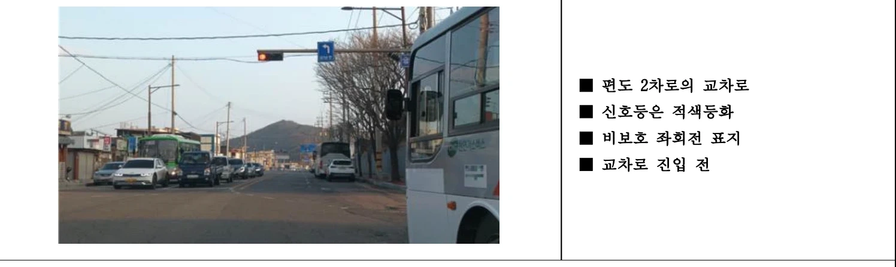

681. Which of the following are incorrect ways to drive in the given situation? (Select TWO)

- ①When intending to go straight, proceed at the green traffic light.
- ②When intending to turn left, proceed at the green traffic light while paying attention to oncoming traffic.
- ③When intending to turn left, proceed at the green left-turn arrow.
- ④When intending to turn right from the first lane, stop temporarily before the stop line, and then proceed slowly.
- ⑤When intending to turn right, proceed slowly along the far-right lane of the road before making the turn.
Show answer
Answer
③ When intending to turn left, proceed at the green left-turn arrow.
④ When intending to turn right from the first lane, stop temporarily before the stop line, and then proceed slowly.
Reference
The traffic light in the photo is a horizontal three-color light consisting of red, yellow, and green lights, but does not include the left turn arrow light. If these horizontal tri-color lights and unprotected left turn signs are installed, you can turn left while paying attention to oncoming traffic. When drivers of all vehicles wish to turn right at an intersection, they must first turn right while driving slowly along the right edge of the road. In this case, the driver of the car turning right must pay attention to pedestrians or bicycles stopping or proceeding according to the signal (Article 25, Paragraph 1 of the Road Traffic Act).
Reference text is a machine translation for study.